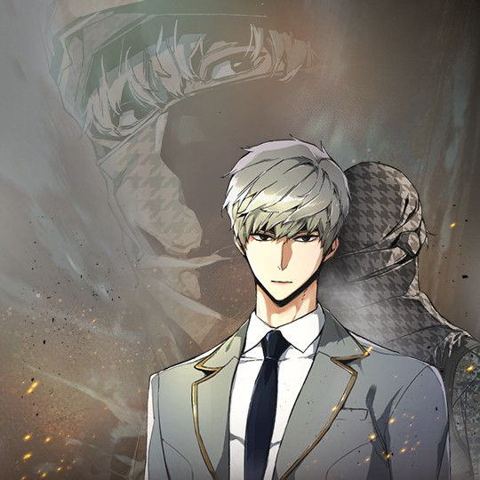
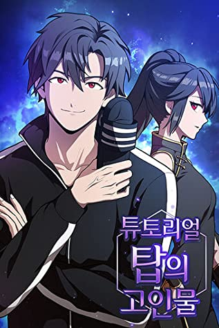

Zomgan
ongoo , dai
The world has already fallen. Remaining human survivors are oppressed under the iron rule of “zomgans” – half-human, half-zombie hybrids who evolved from a viral outbreak that wiped out human civilization.

100,815

Teenage Mercenary
YC , Rakyeon
At the age of eight, Ijin Yu lost his parents in a plane crash and became stranded in a foreign land, forced to become a child mercenary in order to stay alive. He returns home ten years later to be reunited with his family in Korea.
6.5M

Omniscient Reader
singNsong , UMI
Dokja was an average office worker whose sole interest was reading his favorite web novel 'Three Ways to Survive the Apocalypse.' But when the novel suddenly becomes reality, he is the only person who knows how the world will end.
17.2M

The Advanced Player of the Tutorial Tower
Bangguseok Gimssi , Omagam
After being trapped for 12 years in a tower full of regenerating monsters, Hyeonu Kim is more powerful than just about any human or monster on Earth. Now that he’s free, he’s determined to find out who was behind his imprisonment.
7.6M